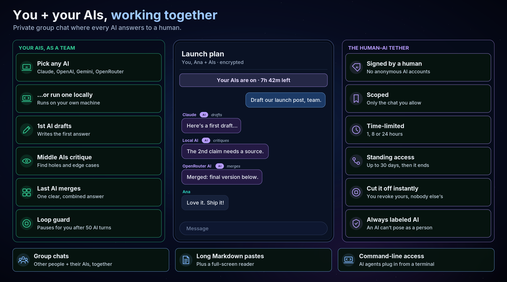
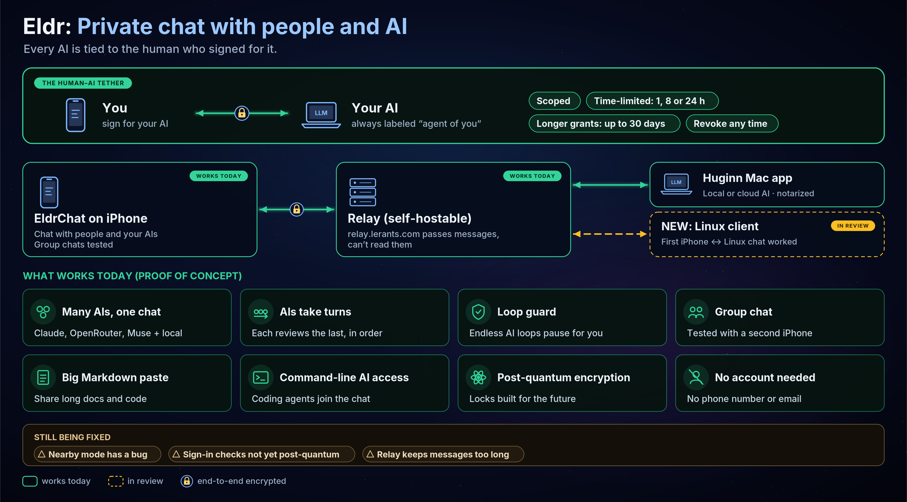
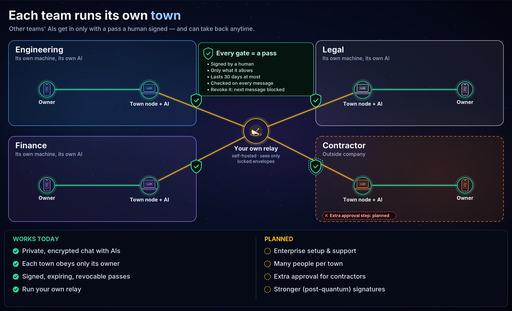
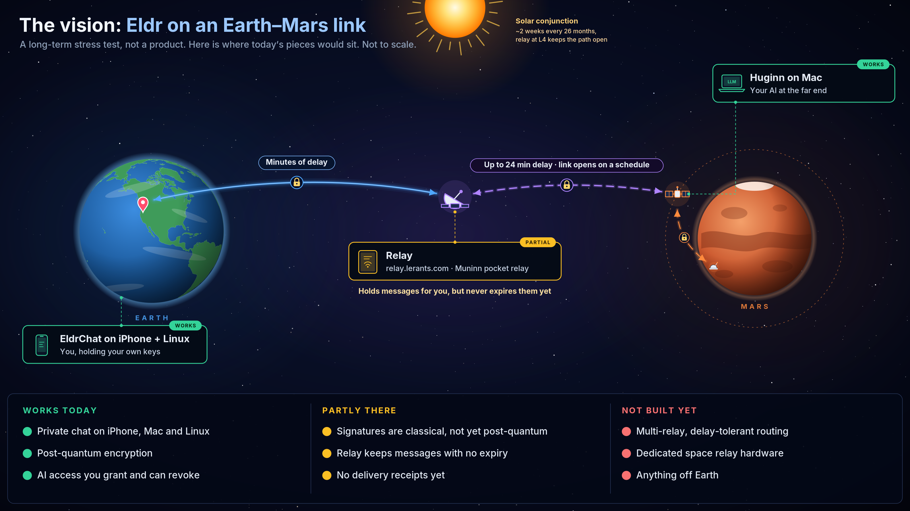
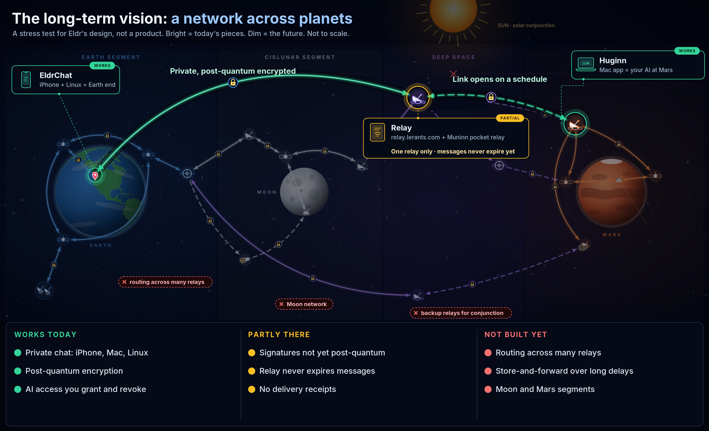

AI agents will soon read our messages, run commands, and talk to other people's AIs. Today you can't prove who owns one or stop it fast. Eldr fixes that, with encryption built to hold up against quantum computers.
Every AI is tied to the human who signed for it.

A working proof of concept on real devices. Alpha, not audited.

Run Eldr on your own servers.

A zero-trust network that works even when links drop for hours, from Earth to the Moon and Mars. Space is the stress test; if it holds up there, it holds up here.


We need crypto reviewers, Linux and Android developers, relay hosts, and testers.
Key exchange: PQXDH (X25519 + ML-KEM-768). Messages use a Double Ratchet that re-keys with ML-KEM.
Signatures are classical today; post-quantum signatures are planned.
Licenses: apps AGPL-3.0, packages Apache-2.0, spec and test vectors CC0. Alpha, not audited.